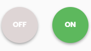
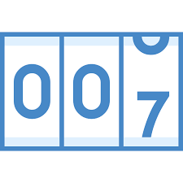

<div class="toolbar">
    <button (click)="layoutService.addItem()"><i class="fas fa-plus"></i></button>
    <div
    class="draggable"
    draggable="true"
    (dragend)="layoutService.dropItem('fullGauge')">
    <b>Gauge</b>
    
  </div>
  <div
    class="draggable"
    draggable="true"
    (dragend)="layoutService.dropItem('toggle')">
    <b>Toggle</b>
    
  </div>
  <div
  class="draggable"
  draggable="true"
  (dragend)="layoutService.dropItem('thermometer')">
  <b>Thermometer</b>
  
</div>
<div
class="draggable"
draggable="true"
(dragend)="layoutService.dropItem('chart')">
<b>Chart</b>

</div>
<div
class="draggable"
draggable="true"
(dragend)="layoutService.dropItem('counter')">
<b>Counter</b>

</div>
</div>
<gridster [options]="options">
  <gridster-item 
  *ngFor="let item of layout"
  [item]="item"
  (dragover)="layoutService.setDropId(item.id)">
  <button (click)="layoutService.deleteItem(item.id)"><i class="fas fa-times"></i></button>
  <ng-container appLayoutItem [componentRef]="layoutService.getComponentRef(item.id)"></ng-container>
  </gridster-item>
</gridster>